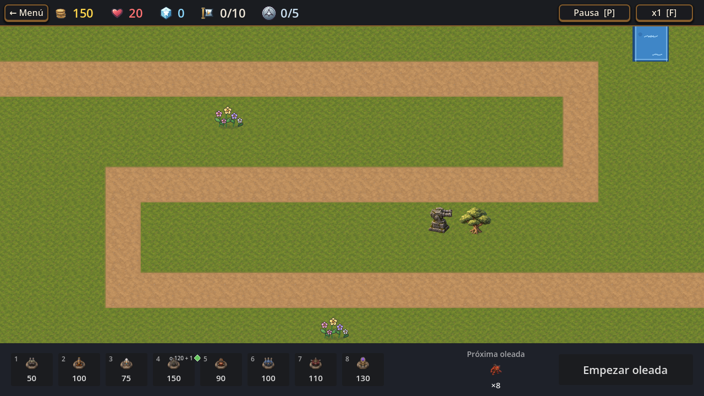
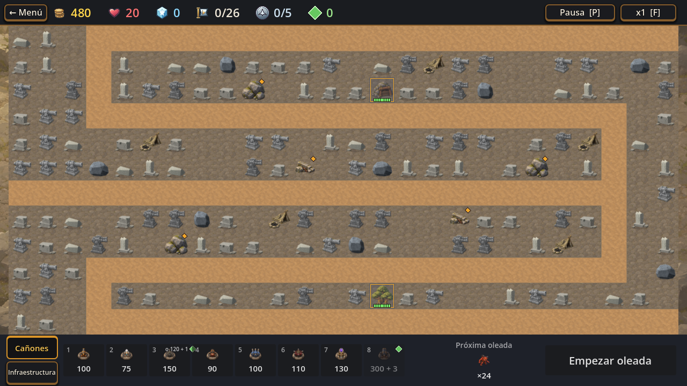
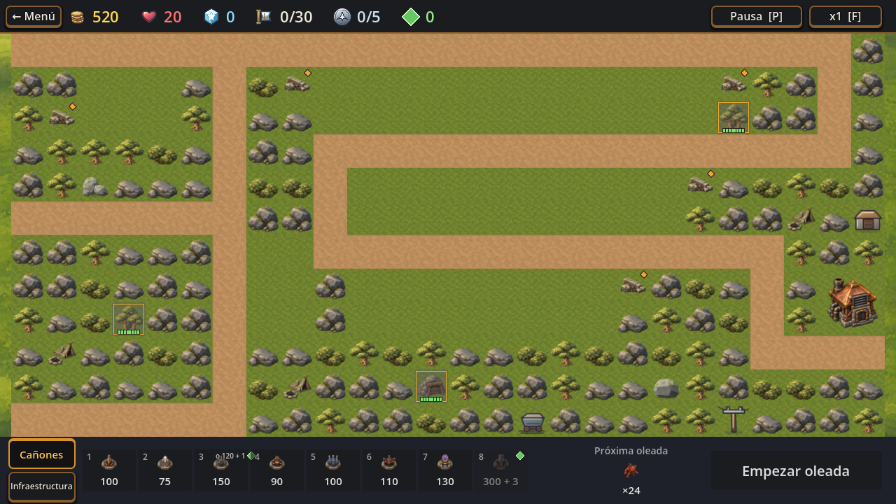

Pradera

T267b y T277 ya integrados. Este es el extremo inicial de la campaña.
Acá podés ver el arte que está en el juego hoy y las propuestas que todavía esperan una decisión. Las imágenes actuales se capturaron de nuevo desde la versión vigente; las muestras viejas sin integrar del PR #132 quedaron afuera.
T537 · galería de revisiónCapturas actuales de 1, 14 y 15 a 1280×720. Revisá composición, lectura y coherencia del arte en el mapa.

T267b y T277 ya integrados. Este es el extremo inicial de la campaña.

Rocas y marcas M80, más adornos M79. T434 dejó como deuda posible las estatuas guerreras de este bioma.

La Central y los tres elementos de abastecimiento que todavía están activos. La dirección nueva se muestra debajo como concepto aprobado, no integrado.
La propuesta que ya dijiste que te gusta, con el farol de la nave destruida apagado. Se incluye para que se entienda qué cambia respecto de la captura actual.
Vagoneta, poste y galpón con sus dibujos históricos. El resto del nivel sí muestra el arte vigente de M79/M80.

Nave individual en ruinas con farol roto oscuro y taller/herrería en ruinas, con estados restaurados reservados para más adelante. Esto todavía no está integrado; no te pido volver a aprobar el diseño.
Queda por definir en el trabajo de integración si el poste se reemplaza por lingotes existentes y cómo se conserva la función visual de abastecimiento. La galería no decide esa implementación.
La única pieza de esta sección que sigue necesitando tu aprobación artística.
Podés contestar en un solo mensaje, por ejemplo: “T267: sí para V1; T434: solo estatuas; T233: aprobado” o indicar cambios concretos.